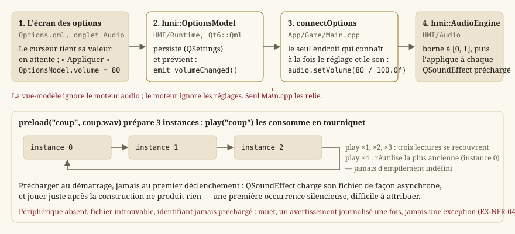

Audio
Cette page explique comment le jeu produit du son : le socle de lecture (hmi::AudioEngine), le réglage de volume qui le pilote depuis l'écran des options, et le provisionnement de Qt Multimedia. Le périmètre de code est Source/HMI/Audio — un en-tête, une implémentation — et l'unique endroit qui le relie au reste, Source/App/Game/Main.cpp.
Note — Le jeu ne livre aujourd'hui aucun bruitage : le socle existe, le volume l'atteint, mais aucun son n'est encore préchargé ni joué. La page décrit donc un mécanisme complet et testé, dont le contenu viendra avec les lots qui en ont besoin. C'est volontaire : le socle a été écrit quand la frontière
Core/HMIse posait, pas quand le premier bruitage a été demandé.
Pourquoi une page pour si peu de code
Parce que l'audio est l'endroit où la règle d'architecture du projet est la plus facile à enfreindre sans s'en rendre compte. Un coup d'épée « fait du bruit » : la tentation est d'appeler le son depuis la fonction qui résout l'attaque — c'est-à-dire depuis Core. Le jour où cela arrive, la simulation cesse d'être testable sans périphérique audio, et le déterminisme n'est plus vérifiable en tête d'une machine de CI sans carte son.
La règle d'or, une fois de plus
Core expose des transitions d'état ; c'est HMI qui décide qu'une transition fait du bruit. Exactement la même séparation que pour le rendu (Rendu 2D : de la scène à l'écran) — et pour la même raison : la simulation reste pure, déterministe et testable sans périphérique audio (EX-NFR-010, EX-ARCH-012, EX-REN-047). Aucun fichier de Core/ n'inclut Qt, ni ne sait qu'un son existe.
Concrètement, la règle se tient d'elle-même : Core ne connaît aucun type de cette page, et le contrôle check_ui_layers.py refuse une inclusion de Qt dans Core (Build, tests et intégration continue). Ce n'est donc pas une discipline à retenir, c'est une erreur de compilation puis un échec de CI.
Le socle : hmi::AudioEngine
Source/HMI/Audio/AudioEngine.h enveloppe QSoundEffect (Qt Multimedia), le composant Qt conçu précisément pour des échantillons courts à faible latence — le cas d'usage exact d'un bruitage, par opposition à QMediaPlayer, pensé pour la musique, dont la latence et le coût de mise en route sont bien plus élevés. Jouer un claquement de porte avec QMediaPlayer s'entend : le son arrive après le geste.
La classe est non copiable et non déplaçable : elle possède des QSoundEffect et un périphérique ouvert, et la destruction arrête proprement les lectures en cours (RAII, EX-NFR-041). Un moteur audio qu'on duplique par mégarde jouerait deux fois le même son, ou fermerait le périphérique d'un autre.
hmi::AudioEngine::AudioEngine
Deux constructeurs :
| Constructeur | Ce qu'il fait |
|---|---|
AudioEngine() | Ouvre le périphérique de sortie par défaut (QMediaDevices::defaultAudioOutput()). Aucun périphérique → le moteur passe en état muet et journalise un avertissement. |
AudioEngine(ForceMuted::Yes) | Construit un moteur déjà muet sans toucher au périphérique réel. |
Le second existe pour une raison précise : le comportement « pas de son » doit être vérifiable, et il ne le serait pas s'il fallait, pour le tester, une machine sans carte son. Une machine de CI peut en avoir une, ou pas, selon l'image ; un test qui dépend de ce détail échoue un jour sans que le code ait changé. L'étiquette rend l'état testable à volonté.
Dans tous les cas, aucune exception ne franchit cette frontière (EX-NFR-040). L'absence de son n'est pas une panne : c'est un mode de fonctionnement dégradé dans lequel le jeu reste pleinement jouable.
hmi::AudioEngine::muted
Vrai si le moteur ne produira aucun son — périphérique absent, ou état forcé pour les tests. C'est la seule façon pour l'appelant de savoir qu'il joue dans le vide ; play ne le lui dira pas, par construction.
hmi::AudioEngine::preload
preload(id, fichier) associe un identifiant logique ("coup") à un fichier WAV. Trois points de son contrat ne se devinent pas :
- Il faut l'appeler au démarrage, jamais au premier déclenchement.
QSoundEffectcharge son fichier de façon asynchrone : jouer immédiatement après construction ne produit rien. Un préchargement paresseux donnerait donc une première occurrence silencieuse — et les suivantes audibles. C'est un défaut particulièrement pénible à attribuer, parce qu'il disparaît dès qu'on cherche à le reproduire. - Un fichier absent ne fait pas échouer l'appel. La lecture ultérieure de cet identifiant restera simplement silencieuse, avec son avertissement journalisé.
- Il prépare
MAX_INSTANCES_PER_EVENT(3) instances identiques, pas une seule — voir le tourniquet ci-dessous.
Un second appel avec le même identifiant remplace la réserve précédente.
hmi::AudioEngine::play
play(id) joue l'échantillon, et ne fait rien — sans erreur pour l'appelant — si le moteur est muet, si l'identifiant n'a jamais été préchargé, ou si le fichier n'a pas pu être chargé.
Le point intéressant est le tourniquet. Un même son déclenché en rafale — trois coups d'épée en une seconde — poserait, avec une seule instance de QSoundEffect, le problème classique : le deuxième déclenchement interrompt le premier, ce qui s'entend comme un hachage. La solution naïve inverse — créer une instance par déclenchement — empile indéfiniment des lectures superposées, et sature aussi bien le mélangeur que la mémoire sur un son déclenché en boucle par un bug.
La réserve de trois instances consommées en rotation tient les deux bouts : jusqu'à trois lectures se recouvrent proprement, et la quatrième réutilise la plus ancienne — celle qui est la plus près d'être terminée, donc celle dont l'interruption s'entend le moins.
{kind=link}

hmi::AudioEngine::setVolume et volume
Le volume est borné à [0, 1] : hors de cet intervalle, il est ramené à l'extrémité la plus proche plutôt que propagé tel quel. Une valeur négative ou explosée ne doit jamais atteindre QSoundEffect — et la source de ces valeurs n'est pas hypothétique, c'est un réglage persisté qu'un fichier de configuration édité à la main peut rendre absurde.
Le réglage s'applique immédiatement à tous les échantillons déjà préchargés, et non au prochain préchargement : baisser le son pendant qu'un bruit dure doit s'entendre tout de suite.
Le volume : de l'écran des options au moteur
Le moteur vit dans l'application du jeu (Source/App/Game/Main.cpp), pas dans la vue-modèle des options : ce n'est pas à un écran de réglages de posséder le son du jeu. La figure ci-dessus montre les quatre maillons ; l'essentiel tient dans ce que chacun ignore :
Options.qmlne connaît quehmi::OptionsModel— un écran ne pilote jamais un moteur ;hmi::OptionsModelpersiste la valeur et émetvolumeChanged(), sans savoir qu'un son existe ;connectOptionsest le seul endroit qui connaît à la fois le réglage et le moteur : il lit le volume au démarrage, puis le réapplique à chaque signal ;hmi::AudioEnginereçoit un nombre, et ignore d'où il vient.
Conséquence pratique : le curseur atteint réellement le moteur (EX-REN-048, EX-IHM-083) même tant qu'aucun son n'est joué, ce qui permet de vérifier le câblage aujourd'hui, avant qu'il n'y ait quoi que ce soit à entendre. Un réglage qu'on ne peut pas éprouver est un réglage dont on découvre qu'il ne marche pas le jour où il devrait (EX-IHM-072).
Provisionnement : Qt Multimedia
Qt6::Multimedia est un composant additionnel de Qt, pas une bibliothèque tierce : il figure dans find_package(Qt6 ... COMPONENTS ... Multimedia ...) de Source/CMakeLists.txt, avec la même garde que Widgets/Gui (absent → cibles Qt ignorées, configuration jamais cassée, EX-BUILD-010). Provisionné en CI par modules: qtmultimedia dans l'action .github/actions/setup-qt ; en local, via le composant Multimedia de l'installateur Qt officiel ou aqtinstall -m qtmultimedia.
windeployqt (POST_BUILD) déploie Qt6Multimedia.dll et ses greffons (multimedia/) à côté de l'exécutable — vérifié explicitement en CI (ci.yml). La vérification n'est pas de la défiance : un build local réussi ne prouve rien sur le zip publié, où c'est justement un greffon oublié qui rend le jeu muet chez celui qui le télécharge, et nulle part ailleurs.
Ce qu'il restera à décider
Le socle ne tranche volontairement pas deux questions, parce qu'elles n'ont de bonne réponse qu'avec du contenu sous la main :
- La musique.
QSoundEffectne convient pas à une piste longue ; elle demanderaQMediaPlayer, donc un second chemin, et un second volume dans les options. - Qui déclenche.
HMIobserve aujourd'hui les transitions deCore; reste à choisir où exactement — la vue-modèle, ou la surface de rendu qui voit déjà passer l'animation.
Voir aussi
hmi::AudioEngine,hmi::OptionsModel.- Rendu 2D : de la scène à l'écran — la même séparation
Core/HMIappliquée à l'image. - Écrans, navigation et boucle de jeu — l'écran des options, d'où vient le volume.
- Build, tests et intégration continue — le contrôle qui interdit Qt dans
Core.